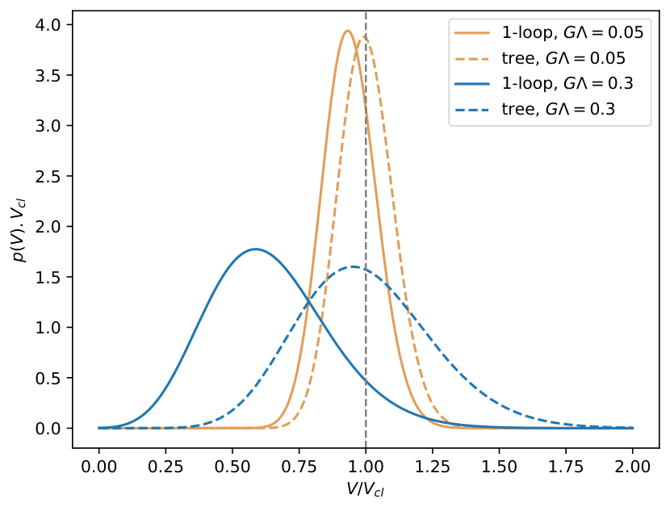
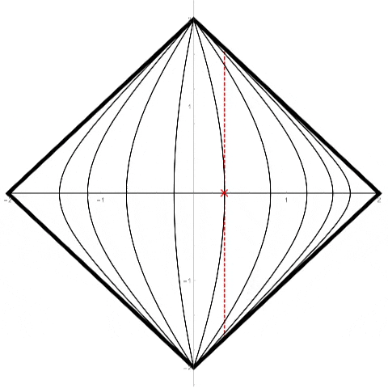
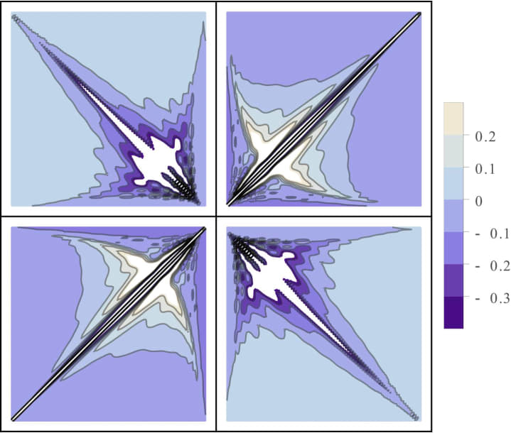
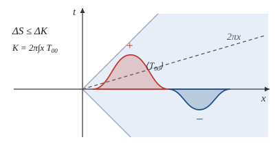
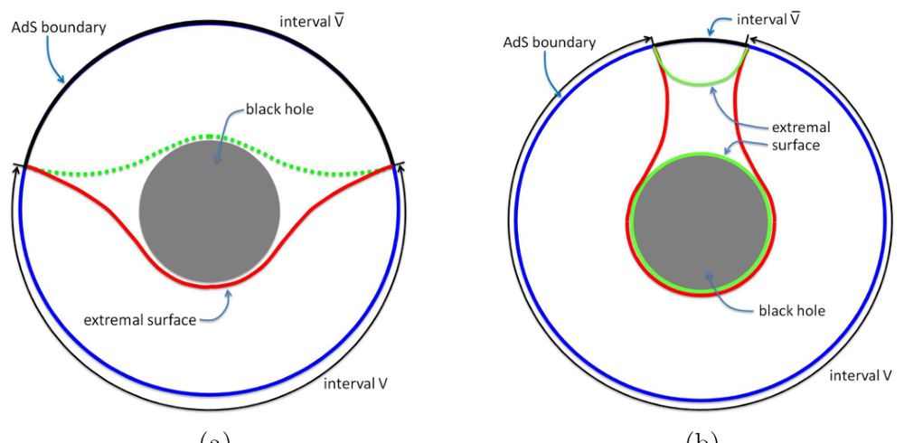

David Blanco
Associate Researcher (Investigador Adjunto), CONICET — Instituto de Física de Buenos Aires (IFIBA)
Assistant Professor (Profesor Adjunto), Department of Physics, FCEyN, University of Buenos Aires
Research
I work at the interface between quantum information theory, quantum field theory and gravity. Much of my research uses information-theoretic quantities—entanglement entropy, relative entropy, mutual information and modular Hamiltonians—to learn about the structure of quantum field theories and about how spacetime geometry emerges in the AdS/CFT correspondence.
Selected publications

Euclidean volume fluctuations in de Sitter quantum gravity
We obtain the probability distribution of the total volume of the universe in Euclidean de Sitter quantum gravity from the partition function, at several levels of approximation.
It turns the dependence of the partition function on the cosmological constant into a concrete statistical statement about the size of the universe: quantum effects consistently favor smaller universes.

Modular Hamiltonian of a chiral fermion on the torus
We compute the modular Hamiltonian of a chiral fermion at finite temperature on a circle, using a simple method of images.
The result is non-local even for a single interval: the first known example of a modular Hamiltonian with this behavior.

Local temperatures and local terms in modular HamiltoniansEditors’ Suggestion
We define analogues of the Unruh temperature for any quantum field theory and region using relative entropy. Among other things, we argue that in two dimensions they come from a universal local term in the modular Hamiltonian.
Selected as a Physical Review D Editors’ Suggestion and featured on the journal’s front page.

Localization of negative energy and the Bekenstein bound
We show that in a conformal field theory negative energy cannot be isolated far from positive energy, and prove a new form of the Bekenstein bound based on monotonicity of relative entropy.
It connects quantum energy inequalities with quantum information through relative entropy.

Relative entropy and holography
We study relative entropy in AdS/CFT. Among other things, we formulate the first law of entanglement, ΔS = ΔH, and check it and the related inequalities for spherical regions.
With more than 400 citations, it is my most cited work: the first law of entanglement was later used to derive the linearized Einstein equations from the entanglement of the boundary theory.
Full list on INSPIRE and Google Scholar.
Students
Current
Mateo KoifmanPhD in Physics, UBA · since 2021
Bruno SivilottiPhD in Physics, UBA (CONICET fellowship) · since 2025
Thiago CoscarelliLicentiate thesis, UBA · since 2026
Nicolás OteroLicentiate thesis, UBA · since 2026
Iñaki SchlottmannLicentiate thesis, UBA · since 2026
Former licentiate students
Agustín Patxot (2026) · Octavio Rivarola (2026) · Lautaro Kinalczyk (2026, co-supervised) · Daniel Fondevila (2024, co-supervised) · Santiago Ansaldo (2023) · Nicolás Abate (2022) · Juan Laurnagaray (2022) · María Agustina Pereyra Grau (2022, co-supervised) · Tomás Ferreira Chase (2020) · Mateo Koifman (2020, co-supervised) · Gastón Maffei (2020) · Bryan Malpartida (2020, co-supervised) · Ludmila Viotti (2018, co-supervised) · Felipe Rosso (2016, co-supervised)
Teaching
Undergraduate and graduate courses I have taught at the University of Buenos Aires and Instituto Balseiro:
- Quantum field theory
- Advanced quantum field theory
- General relativity
- Astrophysics
- Superconducting circuits for quantum computation
- Quantum mechanics
- Classical mechanics
- Electromagnetism and optics
- Advanced electromagnetism
Science Outreach
Contact
dblanco@df.uba.ar
Instituto de Física de Buenos Aires (IFIBA, UBA-CONICET) & Departamento de Física, FCEyN-UBA
Ciudad Universitaria (1428), Ciudad Autónoma de Buenos Aires, Argentina